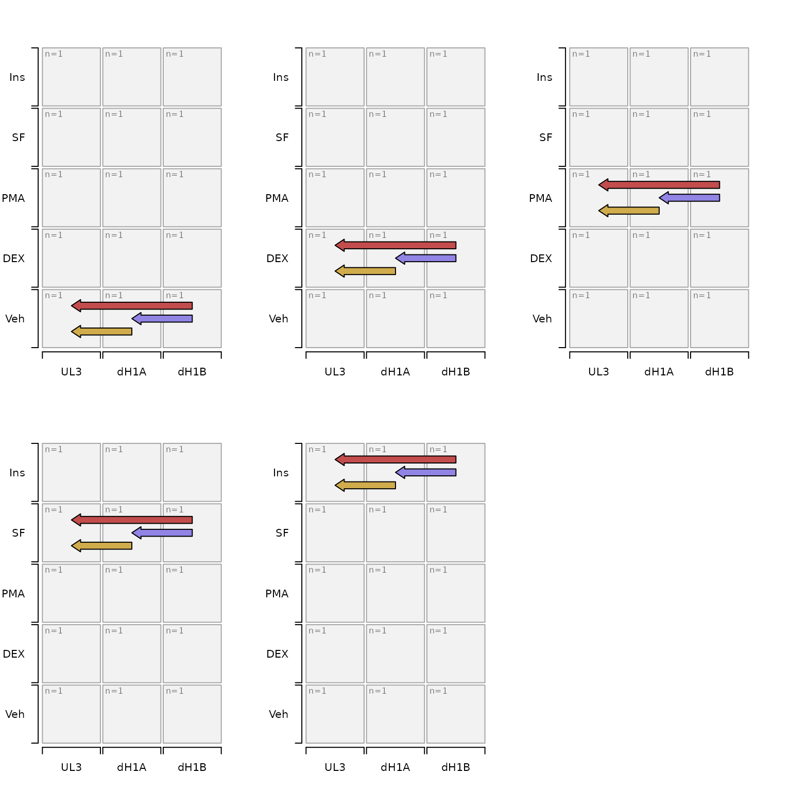
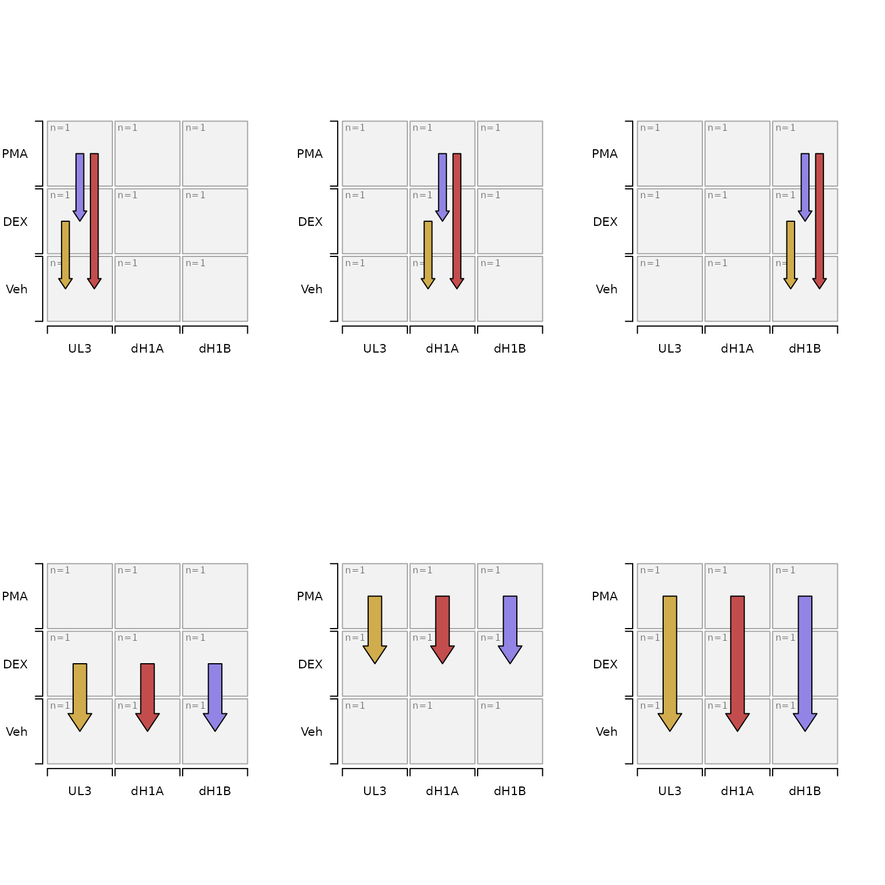

Convert contrast names to Venn setlists for visual comparison
Source:R/jam_contrasts_to_venn_setlists.R
contrasts_to_venn_setlists.RdConvert contrast names to Venn setlists for visual comparison
Usage
contrasts_to_venn_setlists(
contrast_names = NULL,
sestats = NULL,
sedesign = NULL,
include_multifactor = TRUE,
include_singlefactor = TRUE,
factor_names = NULL,
contrast_style = c("contrast", "comp", "factors"),
max_venn_size = 4,
verbose = FALSE,
...
)Arguments
- contrast_names
charactervector of contrast names, used as the priority input when supplied.- sestats
SEStatsorlistoutput fromse_contrast_stats(), used only whencontrast_namesis not supplied.- sedesign
SEDesignobject, used only when neithercontrast_namesnorsestatsare supplied.- include_multifactor
logicalindicating whether to include twoway contrasts in the Venn diagram logic. Currently the logic includes comparisons only across compatible twoway comparisons, it does not (yet) include Venn diagrams that include oneway and corresponding twoway comparisons together. Note: One ofinclude_multifactorandinclude_singlefactormust be true.- include_singlefactor
logicalindicating whether to include single-factor contrasts in the Venn diagram logic. Note: One ofinclude_multifactorandinclude_singlefactormust be true.- contrast_style
characterstring indicating how to return the resulting Venn set lists:"contrast"(default) returns alistwith contrast names"comp"returns alistwith comp names fromcontrast2comp()"factors"returns adata.framefromcontrasts_to_factors()with one column per design factor. In this case it may be useful to passfactor_namesin order to assign column names to the factor columns.
- max_venn_size
numericmaximum number of groups to include per Venn diagram. When the number of contrasts to be included in a Venn set contains one extra contrast, the last two sets will be adjusted to accomodate the extra set:when
max_venn_size=2the last set will contain 3 members;when
max_venn_size=3(or higher) the last set will contain 2 members, and the previous set will contain(max_venn_size - 1)members.
- verbose
logicalindicating whether to print verbose output.- ...
additional arguments are passed to
contrasts_to_factors().
Details
This function is still under active development to be improved, feedback is welcomed.
The motivation is to take a set of contrast names, and return reasonable subsets of contrasts suitable for visual comparison using Venn diagrams. Ultimately, the process is analogous to defining contrasts themselves: keep experimental factors fixed while varying one factor at a time. The difference is that experimental "factors" may themselves involve a comparison.
The process is currently being tested for two-factor design scenarios, and will be extended to handle higher factor designs in future.
The process
Contrasts are converted to
data.framewithcontrasts_to_factors()Each factor column is iterated to produce sets of contrasts as follows:
The factor
data.frameis subset for rows with a comparison in the factor column.When
include_multifactor=FALSE(not default) then data is filtered to remove rows with comparisons in any other factor columns.When
include_singlefactor=FALSE(not default) then data is filtered to remove rows with single values in any other factor columns.The remaining rows are iteratively split using values in the other factor columns.
Remaining rows are also iteratively split by the depth of the contrast, oneway comparisons, and twoway comparisons.
If any subset contains more than
max_venn_sizerows, it is first split by the control factor level in the factor comparison, then it is split by the depth of the comparison.In all cases, the resulting sets are split into subsets with size
max_venn_size.
See also
Other jam experiment design:
SEDesign(),
[,SEDesign-method,
check_sedesign(),
contrast2comp(),
contrast_colors_by_group(),
contrast_names_to_sedesign(),
contrastnames(),
contrasts(),
contrasts<-(),
contrasts_to_factors(),
design,SEDesign-method,
design<-,SEDesign,matrix-method,
draw_oneway_contrast(),
draw_twoway_contrast(),
factors(),
filter_contrast_names(),
groups(),
groups_to_sedesign(),
plot.SEDesign(),
plot_sedesign(),
print,SEDesign-method,
samples(),
sedesign_to_factors(),
sort_contrasts(),
validate_sedesign()
Examples
group_names <- paste0(
rep(c("UL3", "dH1A", "dH1B"), each=5), "_",
c("Veh", "DEX", "PMA", "SF", "Ins"))
sedesign <- groups_to_sedesign(group_names)
# by default it returns contrast names
venn_setlists <- contrasts_to_venn_setlists(sedesign=sedesign,
include_multifactor=FALSE,
factor_names=c("Genotype", "Treatment"))
jamba::sdim(venn_setlists)
#> rows class
#> dH1A-UL3,dH1B-UL3,dH1B-dH1A : Veh 3 character
#> dH1A-UL3,dH1B-UL3,dH1B-dH1A : DEX 3 character
#> dH1A-UL3,dH1B-UL3,dH1B-dH1A : PMA 3 character
#> dH1A-UL3,dH1B-UL3,dH1B-dH1A : SF 3 character
#> dH1A-UL3,dH1B-UL3,dH1B-dH1A : Ins 3 character
#> dH1A-UL3 : Veh,DEX,PMA 3 character
#> dH1A-UL3 : SF,Ins 2 character
#> dH1B-UL3 : Veh,DEX,PMA 3 character
#> dH1B-UL3 : SF,Ins 2 character
#> dH1B-dH1A : Veh,DEX,PMA 3 character
#> dH1B-dH1A : SF,Ins 2 character
#> UL3 : DEX-Veh,PMA-Veh,SF-Veh,Ins-Veh 4 character
#> UL3 : PMA-DEX,SF-DEX,Ins-DEX 3 character
#> UL3 : SF-PMA,Ins-PMA 2 character
#> dH1A : DEX-Veh,PMA-Veh,SF-Veh,Ins-Veh 4 character
#> dH1A : PMA-DEX,SF-DEX,Ins-DEX 3 character
#> dH1A : SF-PMA,Ins-PMA 2 character
#> dH1B : DEX-Veh,PMA-Veh,SF-Veh,Ins-Veh 4 character
#> dH1B : PMA-DEX,SF-DEX,Ins-DEX 3 character
#> dH1B : SF-PMA,Ins-PMA 2 character
#> UL3,dH1A,dH1B : DEX-Veh 3 character
#> UL3,dH1A,dH1B : Ins-DEX 3 character
#> UL3,dH1A,dH1B : Ins-PMA 3 character
#> UL3,dH1A,dH1B : Ins-SF 3 character
#> UL3,dH1A,dH1B : Ins-Veh 3 character
#> UL3,dH1A,dH1B : PMA-DEX 3 character
#> UL3,dH1A,dH1B : PMA-Veh 3 character
#> UL3,dH1A,dH1B : SF-DEX 3 character
#> UL3,dH1A,dH1B : SF-PMA 3 character
#> UL3,dH1A,dH1B : SF-Veh 3 character
# plot the contrasts included in one particular Venn setlist
withr::with_par(list("mfrow"=c(2, 3)), {
for (n in 1:5) {
setest <- sedesign[, , comp2contrast(venn_setlists[[n]])]
plot_sedesign(setest, contrast_style="none")
}
})

# subset some groups to simplify
x <- jamba::unvigrep("Ins|SF", groups(sedesign));
sedesignsub <- validate_sedesign(sedesign, groups=x)
venn_set_comps <- contrasts_to_venn_setlists(sedesign=sedesignsub,
contrast_style="comp",
include_multifactor=FALSE)
withr::with_par(list("mfrow"=c(2, 3)), {
for (n in 1:6 + 6) {
setest <- sedesignsub[, , comp2contrast(venn_set_comps[[n]])]
plot_sedesign(setest, contrast_style="none")
}
})
